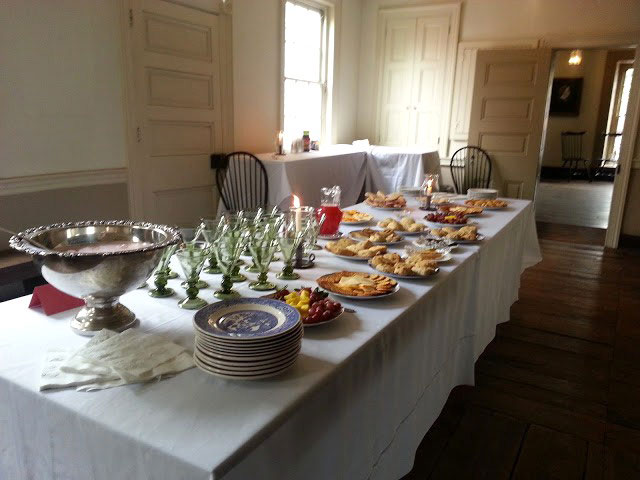
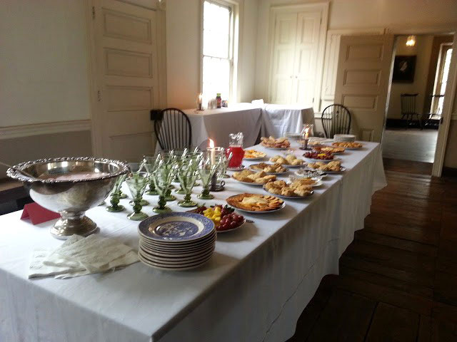

This stone tavern was built in 1753 by Jacob Bachmann and his wife at the corner of Fermor (now Second) and Northampton Streets. Local politicians met here to exchange news or to conduct meetings. Some important men who stayed here included John Adams of Massachusetts, William Ellery of Rhode Island, and William Whipple of New Hampshire, all signers of the Declaration of Independence, as well as Pennsylvania signer George Taylor, who owned the tavern for a period of time.
A large room on the second floor served as the first Court of Northampton County from 1753 to 1766. Benjamin Franklin chronicled his visits to the County Court at Bachmann, but there is no local documentation of the visits.
The 1753 Bachmann Publick House is open for programs and special events. Tea parties, colonial activities, and dinner theater performed by the Bachmann Players are some of the events on offer. In addition, an interactive 19th-century dry goods store exhibit, funded by the Kiwanis Club of Easton, will be installed in 2017. The building is also available for group and school tours and private rental. Contact the Director of Operations at 610-253-1222 for more information.
For information about dinner theater events at the 1753 Bachmann Publick House and how you can become involved with the Bachmann Players, check the link below:
www.bachmannplayers.com
169 Northampton St. (By appointment)

 
